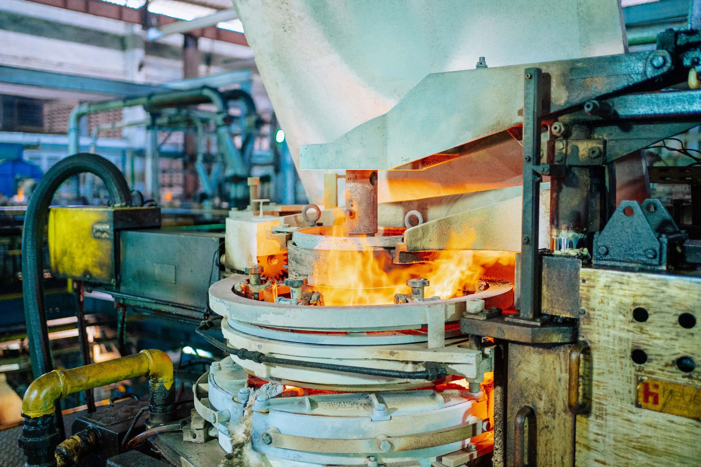

고려아연 갈륨, '국내 유일'에서 '글로벌 허브'로…中 95% 벽에 첫 균열

고려아연은 온산 제련소 내 신규 갈륨 공장 건설에 착수해 2028년부터 연간 15.5t 규모의 금속 갈륨을 생산한다는 계획을 공식화했다. 현재 전 세계 갈륨 생산의 95% 이상은 중국이 장악하고 있으며, 2023년 8월 중국의 수출통제 시행 이후 국제 갈륨 현물 가격은 kg당 300달러를 상회하며 규제 이전 대비 2~3배 수준을 유지하고 있다.
고려아연의 갈륨은 아연 제련 공정의 부산물 회수 방식으로 생산되며, 별도의 광산 채굴 없이 기존 공정 인프라를 활용한다는 점이 핵심이다. 2024년 기준 한국의 갈륨 연간 수요는 약 20~25t으로 추정되며, 고려아연의 15.5t 공급이 실현되면 국내 수요의 60~70%를 대체 조달 가능한 구조가 형성된다.
회사 측은 이번 공장 신설을 단순 국내 공급망 보완이 아닌 '글로벌 허브' 전략으로 명명했다. 이는 일본·유럽 반도체·LED 업체 등 중국 갈륨 의존 탈피 수요처를 겨냥한 수출 지향 전략임을 시사한다. 중국이 일본향 갈륨 수출을 4개월 만에 재개했지만, 이번 재개는 '협상 카드'로 언제든 재차단이 가능하다는 점을 일본 측도 인식하고 있다.
갈륨은 GaAs(갈륨비소) 반도체, GaN(질화갈륨) 전력소자, 5G RF칩, 적외선 검출기 등 방산·통신 핵심 부품의 원료다. 미국 USGS는 갈륨을 35개 핵심광물 목록에 포함시켰으며, EU도 CRM(핵심원자재법)에서 전략 원자재로 지정했다. 글로벌 갈륨 수요는 2030년까지 연 600~700t 수준으로 증가할 것으로 산업계는 전망한다.
중국의 갈륨 통제는 단순 가격 압박이 아니라 반도체·방산 공급망 자체를 흔드는 구조적 무기다. 일본향 재개는 전략적 유화 제스처이지만, 게르마늄 봉쇄 유지와 병행되고 있다는 점에서 중국이 품목별 선별 통제를 정교하게 운용 중임을 보여준다. 고려아연의 글로벌 허브 선언은 이 구조에 처음으로 비중국 공급 노드를 삽입하는 시도다.
주목할 점은 고려아연이 '국내 공급 안보'를 넘어 '수출 공급자'로 포지션을 바꿨다는 것이다. 연 15.5t은 글로벌 시장에서 독립 플레이어로 인정받기에 아직 소규모지만, 가격 협상력을 확보하고 유럽·일본 고객과 장기 공급계약을 맺을 수 있는 최소 임계량에 근접한 수치다. 향후 2단계 증설 계획 여부가 실질적인 '허브' 가능성을 가를 변수다.
고려아연은 갈륨 생산 공식화로 국내 유일 생산자 지위를 확보함과 동시에 글로벌 비중국 공급망의 핵심 노드로 부상한다. 중국 의존 탈피를 원하는 일본 스미토모, 독일 프라운호퍼, 미국 레이시온 등 방산·통신 업체들과의 직접 계약 협상 레버리지가 생긴다.
삼성전자·SK하이닉스·LG이노텍 등 국내 GaN·GaAs 소재 수요 기업들은 2028년 이후 중국산 의존에서 벗어난 안정적 내수 조달 채널을 갖게 된다. 국내 조달 비중이 높아지면 환율 리스크와 수출통제 리스크를 동시에 줄일 수 있어 부품 원가 안정성도 향상된다.
중국 갈륨 정련 기업들(화풍비철, 희소금속그룹 등)은 단기적으로 일본 재개 수요를 흡수하지만, 고려아연·캐나다 테크 리소시스·벨기에 유미코어 등 비중국 공급 노드가 복수로 형성되면 장기 가격 교섭력이 약화된다. 2028년 이후 시장 재편이 가속될 경우 중국 업체들의 수출 단가 협상력은 현재보다 낮아질 수 있다.
일본은 갈륨 재개로 단기 숨통이 트였지만, 재차단 리스크는 여전히 존재한다. 일본 반도체 업계(신에츠화학, 스미토모전기 등)는 고려아연 같은 제3국 공급원을 동시에 확보해야 하는 이중 조달 전략 비용을 장기간 부담해야 한다.
갈륨을 사용하는 GaN 전력소자·GaAs RF칩 구매 담당자라면 2025~2027년 사이 고려아연과의 사전 공급 논의(LOI 수준)를 시작해야 한다. 2028년 양산 개시 시점에 이미 계약 물량이 선점될 가능성이 높으며, 후순위 진입 시 초기 생산물량(15.5t)의 배분에서 밀릴 수 있다.
투자자 관점에서 고려아연의 갈륨 프로젝트는 2028년 매출 기여 규모보다 '비중국 갈륨 공급자'라는 프리미엄 포지션의 가치로 봐야 한다. 갈륨 현물가 kg당 300달러 기준 15.5t은 연 46억 원 수준에 불과하지만, EU CRM법·미국 국방수권법(NDAA) 조달 적격 인증을 받으면 프리미엄 계약단가(kg당 500~600달러)가 가능해진다.
고려아연 2단계 증설 계획 공시 여부, 미국 국방부(DoD) 또는 일본 JOGMEC과의 파트너십 체결 발표를 트리거로 삼아 모니터링할 것. 이 두 이벤트가 동시에 발생하면 고려아연의 갈륨 사업 밸류에이션 재평가가 시작된다.
실제 조달 현장에서는 — 갈륨 공급 논의를 처음 시작하는 고객들이 '중국산 대신'이라는 조건을 붙이면서도 인증서(원산지·순도 99.99% CoA)와 납기 일관성을 동시에 요구한다. 고려아연이 글로벌 허브로 인정받으려면 물량보다 인증 체계와 정시 납품 트랙레코드를 먼저 쌓아야 한다 — 이것이 비중국 공급자의 실질적 진입장벽이다.
이 포스팅은 쿠팡 파트너스 활동의 일환으로 수수료를 제공받습니다.